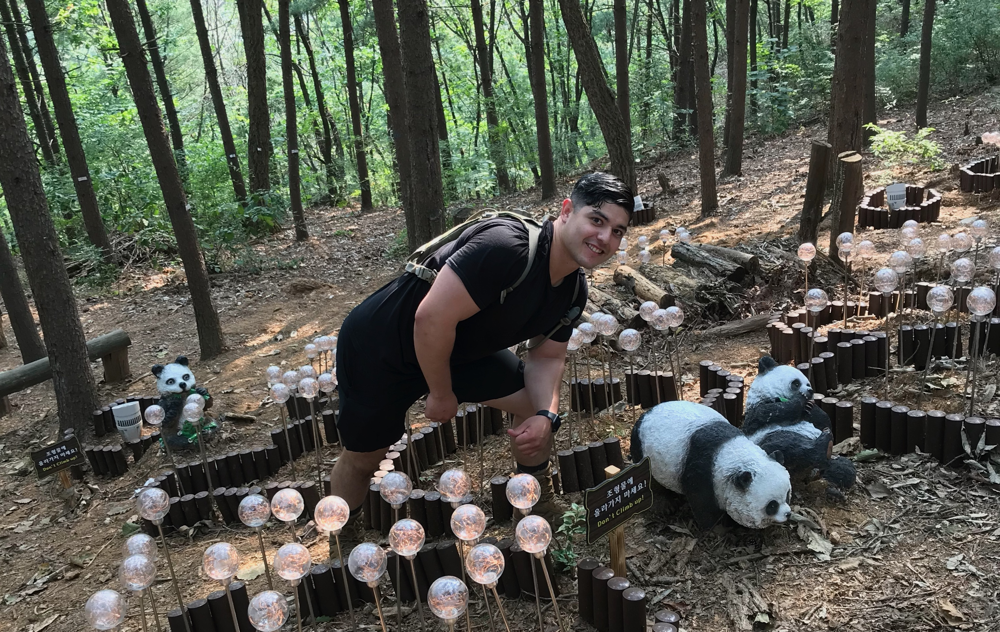

Jaime Diaz Jr. - SkillStorm Student
My name is Jaime Diaz Jr. Born and raised in San Jose, California. I'm currently in the military and
stationed at Fort Polk, Louisiana. I'm also a student in a coding bootcamp offered by SkillStorm. I'm learning more about
several coding languages everyday and I cant wait to see where this knowlege takes me.
